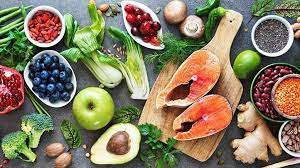
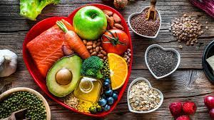
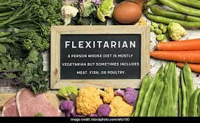
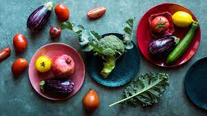
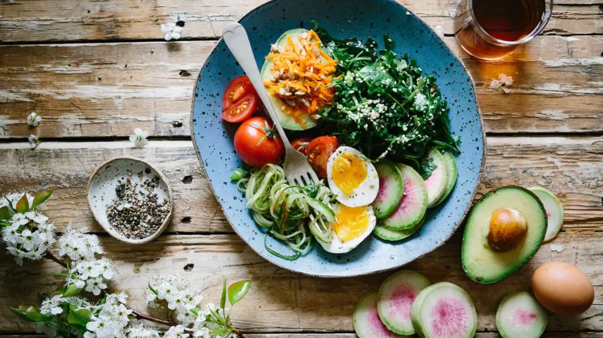
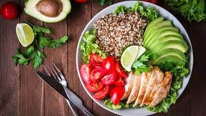

DIETS 101::

The Mediterranean diet

The Dash diet

Plant based Flexiterian diet
Defination
The Mediterranean diet has long been considered the gold standard for nutrition, disease prevention, wellness, and longevity. This is based on its nutrition benefits and sustainability.How it works
The Mediterranean diet is based on foods that people in countries like Italy and Greece have traditionally eaten. It is rich in:- vegetables
- fruits
- whole grains
- fish
- nuts
- lentils
- olive oil
Additionally, the Mediterranean diet limits:
- refined grains
- trans fats
- processed meats
- added sugar
- other highly processed foods
Health benefits
This diet’s emphasis on minimally processed foods and plants has been associated with a reduced risk of multiple chronic diseases and increased life expectancy. Studies also show that the Mediterranean diet has a preventive effect against certain cancers. Though the diet was designed to lower heart disease risk, numerous studies indicate that its plant-based, high unsaturated fat dietary pattern can also aid in weight loss . A systematic review analyzing five different studies found that, compared with a low fat diet, the Mediterranean diet resulted in greater weight loss after 1 year. Compared with a low carb diet, it produced similar weight loss results. One study in more than 500 adults over 12 months found that higher adherence to a Mediterranean diet was associated with double the likelihood of weight loss maintenance. Additionally, the Mediterranean diet encourages eating plenty of antioxidant-rich foods, which may help combat inflammation and oxidative stress by neutralizing free radicals .Other benefits
Recent studies have also found that the Mediterranean diet is associated with decreased risk of mental disorders, including cognitive decline and depression. Eating less meat is also associated with a more sustainable diet for the planet.Downsides
Since the Mediterranean diet does not put a big emphasis on dairy products, it’s important to make sure you still get enough calcium and vitamin D in your diet.
Sample Menu
Monday
Breakfast: Greek yogurt with strawberries and chia seedsLunch: a whole grain sandwich with hummus and vegetables
Dinner: a tuna salad with greens and olive oil, as well as a fruit salad
Tuesday
Breakfast: oatmeal with blueberriesLunch: caprese zucchini noodles with mozzarella, cherry tomatoes, olive oil, and balsamic vinegar
Dinner: a salad with tomatoes, olives, cucumbers, farro, grilled chicken, and feta cheese
Wednesday
Breakfast: an omelet with mushrooms, tomatoes, and onionsLunch: a whole grain sandwich with cheese and fresh vegetables
Dinner: Mediterranean lasagna
Thursday
Breakfast: yogurt with sliced fruit and nutsLunch: a quinoa salad with chickpeas
Dinner: broiled salmon with brown rice and vegetables
Friday
Breakfast: eggs and sautéed vegetables with whole wheat toastLunch: stuffed zucchini boats with pesto, turkey sausage, tomatoes, bell peppers, and cheese
Dinner: grilled lamb with salad and baked potato
Saturday
Breakfast: oatmeal with raisins, nuts, and apple slicesLunch: a whole grain sandwich with vegetables
Dinner: Mediterranean pizza made with whole wheat pita bread and topped with cheese, vegetables, and olives
Sunday
Breakfast: an omelet with veggies and olivesLunch: falafel bowl with feta, onions, tomatoes, hummus, and rice
Dinner: grilled chicken with vegetables, sweet potato fries, and fresh fruit
Defination
Dietary Approaches to Stop Hypertension, or DASH, is an eating plan designed to help treat or prevent high blood pressure, which is clinically known as hypertension. It emphasizes eating plenty of fruits, vegetables, whole grains, and lean meats. It is low in salt, red meat, added sugars, and fat. While the DASH diet is not a weight loss diet, many people report losing weight on it.How it works
The DASH diet recommends specific servings of different food groups. The number of servings you are encouraged to eat depends on your daily calorie intake. For example, each day an average person on the DASH diet would eat about:- Five servings of vegies
- Five servings of fruits
- seven servings of healthy carbs like whole grains
- two servings of low fat dairy products
- two servings or fewer of lean meats
Health benefits
The DASH diet has been shown to reduce blood pressure levels and several heart disease risk factors. Also, it may help lower your risk of breast and colorectal cancers . Studies show that the DASH diet can also help you lose weight. For example, an analysis of 13 studies found that people on the DASH diet lost more weight over 8–24 weeks than people on a control diet. Another study in adults with obesity over 12 weeks found that the DASH diet helped decrease total body weight, body fat percentage, and absolute fat mass in study participants while preserving muscle strength .Other benefits
In addition to weight loss, the DASH diet may help combat depression symptoms. A comparative study over 8 years found that even moderate adherence to the DASH diet was related to lower depression risk.Downsides
While the DASH diet may aid with weight loss and lower blood pressure in individuals with hypertension, there is mixed evidence on salt intake and blood pressure. Eating too little salt has been linked to increased insulin resistance, and a low sodium diet isn’t the right choice for everyone. A low sodium diet like the DASH diet is more appropriate for individuals with hypertension or other health conditions that benefit from or require sodium restriction . More research is needed in this area to understand how a low sodium diet can affect insulin resistance in individuals without hypertension.
Sample Menu
Monday
Breakfast: 1 cup (90 grams) of oatmeal with 1 cup (240 ml) of skim milk, 1/2 cup (75 grams) of blueberries and 1/2 cup (120 ml) of fresh orange juice.Snack: 1 medium apple and 1 cup (285 grams) of low-fat yogurt.
Lunch: Tuna and mayonnaise sandwich made with 2 slices of whole-grain bread, 1 tablespoon (15 grams) of mayonnaise, 1.5 cups (113 grams) of green salad and 3 ounces (80 grams) of canned tuna.
Snack: 1 medium banana.
Dinner: 3 ounces (85 grams) of lean chicken breast cooked in 1 teaspoon (5 ml) of vegetable oil with 1/2 cup (75 grams) each of broccoli and carrots. Served with 1 cup (190 grams) of brown rice.
Tuesday
Breakfast: 2 slices of whole-wheat toast with 1 teaspoon (4.5 grams) of margarine, 1 tablespoon (20 grams) of jelly or jam, 1/2 cup (120 ml) of fresh orange juice and 1 medium apple.Snack: 1 medium banana.
Lunch: 3 ounces (85 grams) of lean chicken breast with 2 cups (150 grams) of green salad, 1.5 ounces (45 grams) of low-fat cheese and 1 cup (190 grams) of brown rice.
Snack: 1/2 cup (30 grams) of canned peaches and 1 cup (285 grams) of low-fat yogurt.
Dinner: 3 ounces (85 grams) of salmon cooked in 1 teaspoon (5 ml) of vegetable oil with 1 cup (300 grams) of boiled potatoes and 1.5 cups (225 grams) of boiled vegetables.
Wednesday
Breakfast: 1 cup (90 grams) of oatmeal with 1 cup (240 ml) of skim milk and 1/2 cup (75 grams) of blueberries. 1/2 cup (120 ml) of fresh orange juice.Snack: 1 medium orange.
Lunch: 2 slices of whole-wheat bread, 3 ounces (85 grams) of lean turkey, 1.5 ounces (45 grams) of low-fat cheese, 1/2 cup (38 grams) of green salad and 1/2 cup (38 grams) of cherry tomatoes.
Snack: 4 whole-grain crackers with 1.5 ounces (45 grams) of cottage cheese and 1/2 cup (75 grams) of canned pineapple.
Dinner: 6 ounces (170 grams) of cod fillet, 1 cup (200 grams) of mashed potatoes, 1/2 cup (75 grams) of green peas and 1/2 cup (75 grams) of broccoli.
Thursday
Breakfast: 1 cup (90 grams) of oatmeal with 1 cup (240 ml) of skim milk and 1/2 cup (75 grams) of raspberries. 1/2 cup (120 ml) of fresh orange juice.Snack: 1 medium banana.
Lunch: Salad made with 4.5 ounces (130 grams) of grilled tuna, 1 boiled egg, 2 cups (152 grams) of green salad, 1/2 cup (38 grams) of cherry tomatoes and 2 tablespoons (30 ml) of low-fat dressing.
Snack: 1/2 cup (30 grams) of canned pears and 1 cup (285 grams) of low-fat yogurt.
Dinner: 3 ounces (85 grams) of pork fillet with 1 cup (150 grams) of mixed vegetables and 1 cup (190 grams) of brown rice.
Friday
Breakfast: 2 boiled eggs, 2 slices of turkey bacon with 1/2 cup (38 grams) of cherry tomatoes, 1/2 cup (80 grams) of baked beans and 2 slices of whole-wheat toast, plus 1/2 cup (120 ml) of fresh orange juice.Snack: 1 medium apple.
Lunch: 2 slices of whole-wheat toast, 1 tablespoon of low-fat mayonnaise, 1.5 ounces (45 grams) of low-fat cheese, 1/2 cup (38 grams) of salad greens and 1/2 cup (38 grams) of cherry tomatoes.
Snack: 1 cup of fruit salad.
Dinner: Spaghetti and meatballs made with 1 cup (190 grams) of spaghetti and 4 ounces (115 grams) of minced turkey. 1/2 cup (75 grams) of green peas on the side.
Saturday
Breakfast: 2 slices of whole-wheat toast with 2 tablespoons (40 grams) of peanut butter, 1 medium banana, 2 tablespoons (16 grams) of mixed seeds and 1/2 cup (120 ml) of fresh orange juice.Snack: 1 medium apple.
Lunch: 3 ounces (85 grams) of grilled chicken, 1 cup (150 grams) of roasted vegetables and 1 cup (190 grams) couscous.
Snack: 1/2 cup (30 grams) of mixed berries and 1 cup (285 grams) of low-fat yogurt.
Dinner: 3 ounces (85 grams) of pork steak and 1 cup (150 grams) of ratatouille with 1 cup (190 grams) of brown rice, 1/2 cup (40 grams) of lentils and 1.5 ounces (45 grams) of low-fat cheese.
Dessert: Low-fat chocolate pudding.
Sunday
Breakfast: 1 cup (90 grams) of oatmeal with 1 cup (240 ml) of skim milk, 1/2 cup (75 grams) of blueberries and 1/2 cup (120 ml) of fresh orange juice.Snack: 1 medium pear.
Lunch: Chicken salad made with 3 ounces (85 grams) of lean chicken breast, 1 tablespoon of mayonnaise, 2 cups (150 grams) of green salad, 1/2 cup (75 grams) of cherry tomatoes, 1/2 tablespoon (4 grams) of seeds and 4 whole-grain crackers.
Snack: 1 banana and 1/2 cup (70 grams) of almonds.
Dinner: 3 ounces of roast beef with 1 cup (150 grams) of boiled potatoes, 1/2 cup (75 grams) of broccoli and 1/2 cup (75 grams) of green peas.
Defination
Vegetarianism and veganism are the most popular versions of plant-based diets, which restrict animal products for health, ethical, and environmental reasons. However, more flexible plant-based diets also exist, such as the flexitarian diet. This is a plant-based diet that allows eating animal products in moderation.How it works
Typical vegetarian diets restrict meat of all kinds but allow dairy products. Typical vegan diets restrict all animal products, including dairy, butter, and sometimes other byproducts like honey. The flexitarian eating plan does not have clear-cut rules or recommendations about calories and macronutrients, so it’s considered more of a lifestyle than a diet. Its principles include:- consuming protein from plants instead of animals
- eating mostly fruits, vegetables, legumes, and whole grains
- eating the least processed, most natural forms of foods
- limiting sugar and sweets
Health benefits
TNumerous studies have shown that plant-based diets can reduce your risk of developing chronic diseases, including improved markers of metabolic health, decreased blood pressure, and reduced risk of type 2 diabetes. They can also help you lose weight . Flexitarian diets have also been shown to reduce the risk of type 2 diabetes and improve metabolic health and blood pressure, plus may have their own weight loss benefits..Other benefits
For those who are looking to lead a sustainable lifestyle, decreasing your meat consumption can also reduce greenhouse gas emissions, deforestation, and soil degradation .Downsides
Plant-based eating patterns like vegetarianism and veganism can sometimes be difficult to maintain and may feel restricting, especially if you’re switching from a more meat-based eating style. And while the flexibility of the flexitarian diet makes it easy to follow, being too flexible with it may counteract its benefits.
Sample Menu
Day 1
Breakfast: Sprouted whole-grain toast, avocado, spinach, and eggLunch: Market bowl with chicken or chickpeas, chopped kale or tomatoes, roasted sweet potato cubes, and ranch dressing
Dinner: Tacos with seasoned white fish or lentils, corn tortillas, cabbage slaw, guacamole, and salsa
Snack: Apple and pecans or cucumber sticks and hummus
Day 2
Breakfast: Oatmeal with peanut butter and chopped appleLunch: Mexican bowl with chicken or black beans, chopped romaine and peppers, brown rice, guacamole, and salsa
Dinner: Mediterranean plate with chicken or chickpeas; cucumber, tomato, feta salad; and lemon dill brown rice
Snack: Grape tomatoes and mozzarella sticks or clementine and almonds
Day 3
Breakfast: Green smoothie with 2 percent plain kefir, rolled oats, banana, and spinachLunch: Asian bowl with chicken or edamame, coleslaw mix, quinoa, and ginger dressing
Dinner: Burger night with beef or bean burger, sweet potato fries, and veggie dippers with ranch dressing
Snack: Carrots and almond butter or dark chocolate and berries

The Volumetrics diet

The Mayo Clinic diet

The Low Carb diet
Defination
The Volumetrics diet was created by Penn State University nutrition professor Barbara Rolls and is meant to be a long-term lifestyle change rather than a strict diet.How it works
The eating plan is designed to promote weight loss by having you fill up on nutrient-dense foods that are low in calories and high in water. Meanwhile, it limits calorie-dense foods like cookies, candies, nuts, seeds, and oils. The Volumetrics diet divides food into four categories based on food’s calorie density, which can be calculated with a formula created by Rolls. These categories are:- Category one: includes foods of very low calorie density, like non-starchy fruits and vegetables, nonfat milk, and broth-based soup
- Category two: includes low calorie-dense foods, like starchy fruits and vegetables, grains, breakfast cereal, low fat meat, legumes, and low fat mixed dishes like chili
- Category three: includes medium calorie-dense foods, like meat, cheese, pizza, bread, and ice cream
- Category four: includes high calorie-dense foods, like crackers, chips, chocolate candies, nuts, butter, and oil
Health benefits
The Volumetrics diet encourages nutritious foods that are low in calories but high in fiber, vitamins, and
minerals, which may help increase your intake of key nutrients and protect against nutritional deficiencies.
Research also links diets with a low calorie density to improved diet quality.
Additionally, it limits the amount of processed foods you’ll eat, which can decrease your risk of developing
certain cancers and heart disease.
The Volumetrics diet may also help you lose weight.
A review of 13 studies in more than 3,000 people found that diets rich in low calorie density foods led to
increased weight loss. Similarly, an 8-year study in more than 50,000 women found that high calorie-dense foods
led to increased weight gain.
Downsides
While the Volumetrics diet may be effective for health benefits and weight loss, it requires a good
understanding of Volumetrics, which involves learning about the calorie levels of foods in relation to portion
sizes and nutrient levels.
This may be easier for some compared to others.
Sample Menu
| Breakfast | |
|---|---|
| Monday | banana Yogurts pots |
| Tuesday | Tomato and Watermelon Salad |
| Wednesday | Blueberry Oats Bowl |
| Thursday | Banana Yogurt Pots |
| Friday | Tomato and Watermelon Salad |
| Saturday | Blueberry Oats Bowl |
| Sunday | Banana Yogurt Pots |
| Lunch | |
|---|---|
| Monday | Cannellini Bean Salad |
| Tuesday | Edgy Veggie Wraps |
| Wednesday | Carrot, Orange and Avocado Salad |
| Thursday | Mixed Bean Salad |
| Friday | Panzanella Salad |
| Saturday | Quinoa and Stir Fried Veg |
| Sunday | Moroccan Chickpea Soup |
| Dinner | |
|---|---|
| Monday | Quick Moussaka |
| Tuesday | Spicy Tomato Baked Eggs |
| Wednesday | Salmon with Potatoes and Corn Salad |
| Thursday | Spiced Carrot and Lentil Soup |
| Friday | Med Chicken, Quinoa and Greek Salad |
| Saturday | Grilled Vegetables with Bean Mash |
| Sunday | Spicy Mediterranean Beet Salad |
Defination
The Mayo Clinic Diet was created by the reputable medical organization of the same name.How it works
Designed to be a lifestyle change over a quick fix, the Mayo Clinic Diet focuses on replacing less healthy behaviors with ones that are more likely to support longevity and weight loss. Rather than banning certain foods, the Mayo Clinic Diet uses a pyramid to encourage exercise and illustrate quantities of foods you should be consuming. Fruits, vegetables, and physical activity make up the base of the pyramid, followed by carbs in the next layer, then protein and dairy, fats, and finally, sweets. The diet consists of two phases. An initial, 2-week phase designed to kick-start your weight loss by introducing 5 healthier habits and encouraging you to break 5 common less healthy habits. The second phase is more of a lifestyle change designed to be followed long-term, encouraging education about nutritious food choices and portion sizes in addition to being physically active.Health benefits
Little research is available about the health benefits of the Mayo Clinic Diet. However, the Mayo Clinic tells users to expect about 10 pounds of weight loss during the first 2 weeks, and up to 2 pounds during the second phase. Since diets rich in fiber can increase satiety by making you feel more full, the Mayo Clinic Diet may contribute to weight loss. It may also decrease your risk of developing type 2 diabetes. Additionally, studies show that exercising while on a lower-calorie diet is more effective at promoting weight loss than dieting alone. However, more research is needed to determine the effectiveness of the Mayo Clinic Diet for weight loss.Downsides
While the digital version of the program includes meal plans, recipes, a food tracker, virtual group sessions, at-home workouts, and more, it will cost you monthly to buy into the program.You can refer This PDFS for meal plans
Defination
Low carb diets are among the most popular diets for weight loss. Examples include the Atkins diet, ketogenic (keto) diet, and low carb, high fat (LCHF) diet. Some varieties reduce carbs more drastically than others. For instance, very low carb diets like the keto diet restrict this macronutrient to under 10% of total calories, compared with 30% or less for other types .How it works
Low carb diets restrict your carb intake in favor of protein and fat. They’re typically higher in protein than low fat diets, which is important, as protein can help curb your appetite, raise your metabolism, and conserves muscle mass. In very low carb diets like keto, your body begins using fatty acids rather than carbs for energy by converting them into ketones. This process is called ketosis.Health benefits
Research suggests that low carb diets may reduce risk factors for heart disease, including high cholesterol and blood pressure levels. They may also improve blood sugar and insulin levels in people with type 2 diabetes. Many studies indicate that low carb diets can aid weight loss and may be more effective than conventional low fat diets. For example, a review of 53 studies made up of 68,128 participants found that low carb diets resulted in significantly more weight loss than low fat diets. What’s more, low carb diets appear to be quite effective at burning harmful belly fat.Downsides
In some cases, a low carb diet may raise LDL (bad) cholesterol levels. Very low carb diets can also be difficult to follow and cause digestive upset in some people. In very rare situations, following a very low carb diet may cause a condition known as ketoacidosis, a dangerous metabolic condition that can be fatal if left untreated.
Sample Menu
Monday
Breakfast: Omelet with various vegetables, fried in butter or coconut oil.Lunch: Grass-fed yogurt with blueberries and a handful of almonds.
Dinner: Bunless cheeseburger, served with vegetables and salsa sauce.
Tuesday
Breakfast: Bacon and eggs.Lunch: Leftover burgers and veggies from the previous night.
Dinner: Salmon with butter and vegetables.
Wednesday
Breakfast: Eggs and vegetables, fried in butter or coconut oil.Lunch: Shrimp salad with some olive oil.
Dinner: Grilled chicken with vegetables.
Thursday
Breakfast: Omelet with various vegetables, fried in butter or coconut oil.Lunch: Smoothie with coconut milk, berries, almonds and protein powder.
Dinner: Steak and veggies.
Friday
Breakfast: Bacon and eggs.Lunch: Chicken salad with some olive oil.
Dinner: Pork chops with vegetables.
Saturday
BBreakfast: Omelet with various veggies.Lunch: Grass-fed yogurt with berries, coconut flakes and a handful of walnuts.
Dinner: Meatballs with vegetables.
Sunday
Breakfast: Bacon and eggs.Lunch: Smoothie with coconut milk, a dash of heavy cream, chocolate-flavored protein powder and berries.
Dinner: Grilled chicken wings with some raw spinach on the side.
WORKOUT::
Types of normal exercise needed:
Whether your goal is to lose weight, improve your health, get in better shape, or all of the above, there are three main components to a good exercise program:
- Cardio exercise: Cardio can be any activity that gets your heart rate up, from walking or jogging to cycling or taking a fitness class. Regardless of the exercise, it is always smart to warm up with 5 to 10 minutes of light cardio.
- Weight training: You don't have to lift heavy weights or even spend a lot of time on weight training at first, but you do need to lift. Your muscles will get stronger, helping with daily functioning, and more muscle mass will boost your metabolism.
- Flexibility training: You also need to have the flexibility to go through a full range of motion for each exercise you do. Stretching increases your flexibility and helps your body recover after exercise. While some people like to set aside a day to focus on flexibility, you don't need a separate workout for this—stretching should be included in every workout.
Beginner Workout Plan

Intermediate Workout Plan

Advance Workout Plan

Watch videos about diet and workout
Beginner Workout Schedule
If you're new to exercise, remember these basics and give yourself time to get used to regular workouts.
- Ease into exercise.
- Be sure to rest and recover.
- Make it work for you.
- Learn how to monitor your intensity.
Intermediate Workout Schedule
If you've been exercising for at least three months consistently, you typically fall into this category. If your goal is to lose weight, you want to work your way up to 20 to 60 minutes of cardio about five or more times a week.
- This is a great time to try interval training.
- Don't skimp on strength training.
- You can do cardio and weight training on the same day.
Advanced Workout Schedule
If you've been exercising regularly for several months and do a variety of activities, you fall into this category. To continue making progress and beat plateaus, you'll need to add intensity and variety.
- Mix up your workouts to keep things interesting.
- You can also make your cardio more intense.
- Rest and recovery are critical.